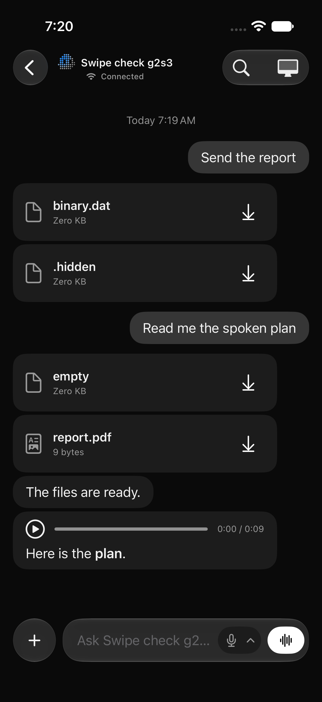
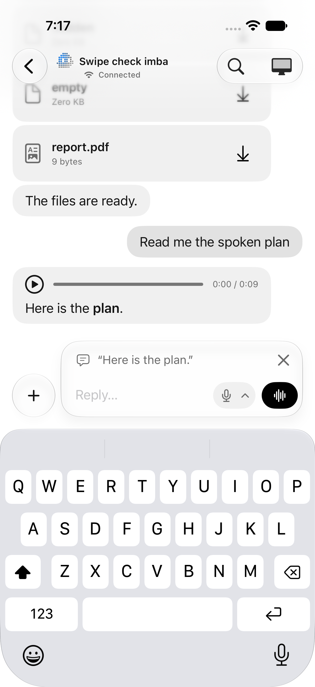
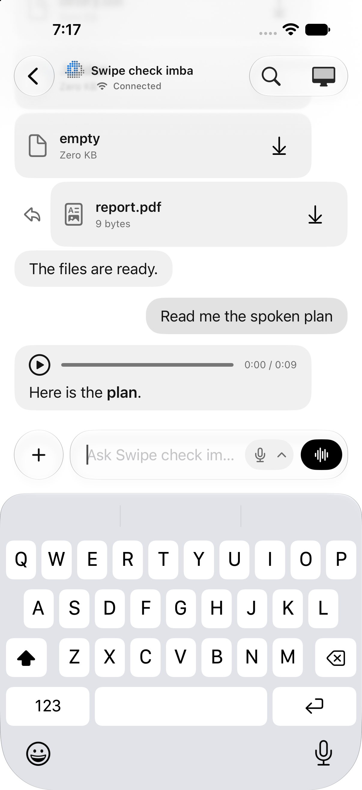
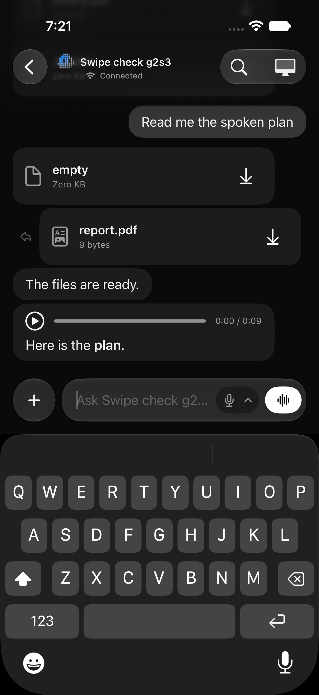
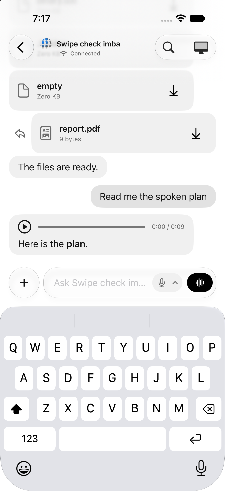
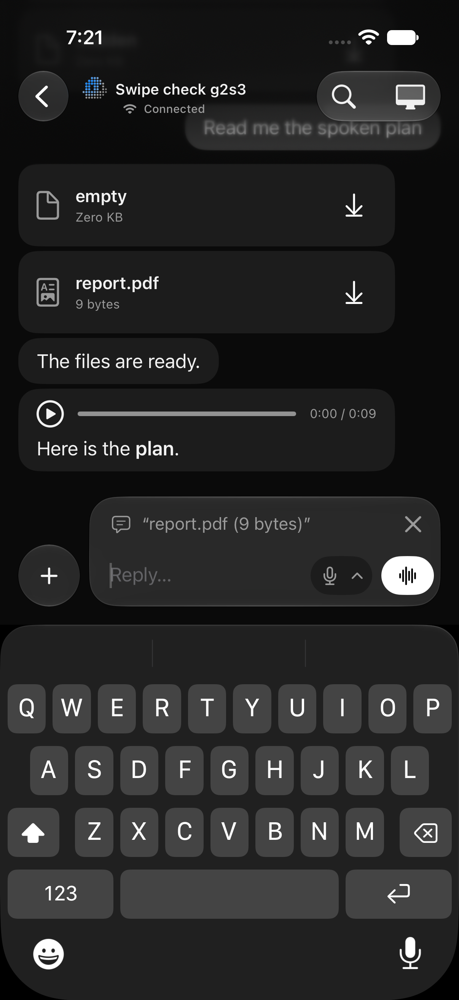
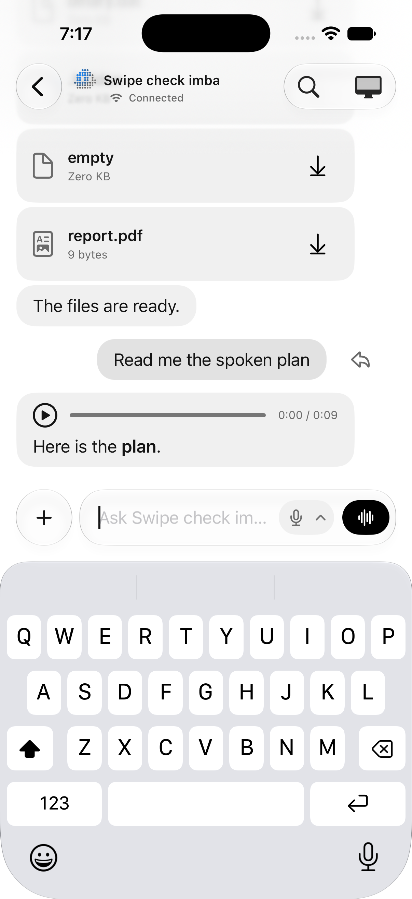
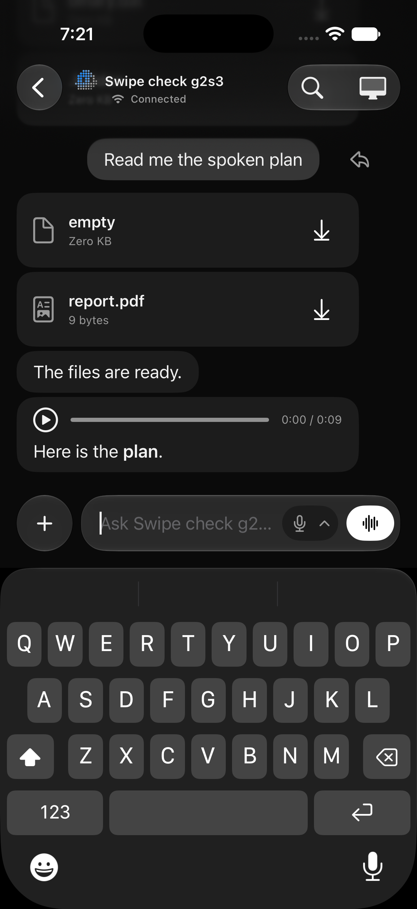

Rest


Code head: 5c875f840530d46f6e5e67c98eb98aba8d15b39e (branch feat/43-swipe-a-message-bubble-to-reply-iphone). Every capture is from a build of this head, at full size (1:1 pixels, 1206×2622), light and dark side by side. Rest, after-release and done are Maestro screenshots taken once the screen settles; mid-drag and threshold are simulator screenshots taken during the drag (small faded arrow under the threshold, full arrow at it; the haptic fires there and can't be shown).
A quick drag on the voice note released early, then the voice note, the file and the user's own message, each past the threshold and cancelled.
apps/maestro/swipe-to-reply.yaml as committed at the code head (600 ms swipes). Before each run the simulator was shut down and booted again and this head's build installed; the lines are the console output, timestamped as printed.
Run 1 (log, JUnit) 2026-11-16 07:01:07 +0800 shutdown done; booting 2026-11-16 07:01:18 +0800 booted; head 5c875f840530d46f6e5e67c98eb98aba8d15b39e 2026-11-16 07:01:50 +0800 Waiting for flows to complete... 2026-11-16 07:02:50 +0800 [Passed] swipe-to-reply (1m) 2026-11-16 07:02:50 +0800 1/1 Flow Passed in 1m Run 2 (log, JUnit) 2026-11-16 07:03:28 +0800 shutdown done; booting 2026-11-16 07:03:40 +0800 booted; head 5c875f840530d46f6e5e67c98eb98aba8d15b39e 2026-11-16 07:03:57 +0800 Waiting for flows to complete... 2026-11-16 07:05:35 +0800 [Passed] swipe-to-reply (1m 37s) 2026-11-16 07:05:35 +0800 1/1 Flow Passed in 1m 37s













